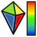

Der Arbeitsbereich Mesh behandelt Dreiecksnetze. Meshes sind eine spezielle Art von 3D-Objekten, von Dreiecken, die durch ihre Kanten und Ecken verbunden sind.

Beispiel eines Mesh-Objekts
Viele 3D-Anwendungen verwenden Netze, als wichtigsten Bestandteil von 3D-Objekten, z.B.: Sketchup, blender, [1] oder 3d studio max. Da Netze sehr einfache Objekte sind, die nur aus Knoten (Punkten), Kanten und (dreieckigen) Flächen bestehen, sind sie sehr einfach zu erstellen, zu modifizieren, zu unterteilen und zu dehnen und können leicht von einer Anwendung zur anderen ohne Verlust übertragen werden. Außerdem, können 3D-Anwendungen in der Regel sehr große Mengen davon ohne Probleme verwalten, da sie sehr einfache Daten enthalten. Aus diesen Gründen sind Netze oft das 3D-Objekt der Wahl, insbesondere bei Anwendungen im Umgang mit Filmen, Animationen und Image-Erstellung.
Im Bereich der Technik, gibt es für Netze jedoch eine große Einschränkung: Sie sind sehr dumme Objekte, nur zusammengesetzt aus Punkten, Linien und Flächen. Sie bestehen nur als reine Oberflächen, enthalten keinerlei Masse-Information, so dass sie sich nicht als Festkörper verhalten. In einem Netz gibt es keine automatische Möglichkeit zu erkennen, ob ein Punkt innerhalb oder außerhalb des Objekts liegt. Dies bedeutet, dass alle Festkörper-Operationen wie Addition oder Subtraktion, immer etwas schwierig auf Netze anzuwenden sind und so oft Fehler zu Folge haben.
In FreeCAD, als eine Konstruktions-Anwendung, ziehen wir vor, mit einer intelligenteren Art von 3D-Objekten zu arbeiten, die weit mehr Informationen enthalten können, wie Masse, Festigkeits-Verhalten oder sogar benutzerdefinierte Parameter. Das Netz-Modul wurde geschaffen, um als Testumgebung zu dienen, aber trotzdem in der Lage zu sein, Netze zu lesen, zu bearbeiten und auch konvertieren ist sehr wichtig für FreeCAD. Sehr oft in Ihrem Arbeitsalltag, erhalten Sie 3D-Daten im Netz-Format. Sie müssen die Daten verarbeiten und analysieren, um Fehler oder andere Probleme zu erkennen, die verhindern, dass die Umwandlung in intelligentere Objekte und schließlich, diese intelligenten Objekte vom Part Modul behandelt werden können.
Benutzung des Mesh Moduls
Das Mesh-Modul verfügt derzeit über ein sehr einfaches Interface, alle seine Funktionen sind im Netze Menü-Eintrag gruppiert. Die wichtigsten Operationen, die Sie derzeit mit Netzen machen kann:
- Importiere Netz: Importiere Netze in verschiedenen Formaten
- Netz Exportieren: Exportiere Netze in verschiedenen Formaten
-
 Netz aus Form erstellen: Konvertiere Part Objekte in Netze
Netz aus Form erstellen: Konvertiere Part Objekte in Netze -
 Normalen ausrichten: Normalen ausrichten
Normalen ausrichten: Normalen ausrichten -
 Normalen umdrehen: Normalen [2] umdrehen
Normalen umdrehen: Normalen [2] umdrehen
- Löcher schließen...: Löcher schließen
-
 Loch schließen: Loch schließen
Loch schließen: Loch schließen - Komponenten entfernen...: Komponenten entfernen
- Komponente von Hand entfernen...: Einzelne Komponente von Hand entfernen
- Dreieck hinzufügen: Dreieck hinzufügen
- Glätten...: Glätten
{kind=link}
{kind=link}
{kind=link}
- Analysieren der Krümmung und Flächen , Prüfen der Konvertierbarkeit in ein Solid
- Untersuche un repariere das Netz...: Überprüft und Repariert Netze
-
 Dreiecksinformation: zeigt Informationen zum Dreieck
Dreiecksinformation: zeigt Informationen zum Dreieck - Krümmungsinformation: zeigt Informationen zur Krümmung
- Netz auf Solid überprüfen: Prüf ob das Netz in ein Solid ( Körper ) konvertiert werden kann
- Abmessungen...: Zeigt die Abmessungen des Netzes
-
 Regelgeometrie... Erzeuge Netzprimitive wie Quader, Zylinder, Konusse , oder Sphären:
Regelgeometrie... Erzeuge Netzprimitive wie Quader, Zylinder, Konusse , oder Sphären:
-
 Erzeuge einen Quader
Erzeuge einen Quader -
 Erzeuge einen Zylinder
Erzeuge einen Zylinder -
 Erzeuge einen Konus
Erzeuge einen Konus -
 Erzeuge eine Sphäre
Erzeuge eine Sphäre -
 Erzeuge ein Ellipsoid
Erzeuge ein Ellipsoid -
 Erzeuge einen Torus
Erzeuge einen Torus
-
- Führe Bool´sche operationen mit Netzen aus
- Vereinigung: Führt Netze zusammen
- Schnitt: Überschneidet Netze
- Differenz: Verschneidet Netze
- Zusammenführen: Führe Netze zusammen
- Netz Auswählen: Netz auswählen
- Netz schneiden: Schneide ein Netz entlang einer Linie
- Netz auftrennen: Trenne Netze auf
-
 Segment erzeugen: Segment erzeugen
Segment erzeugen: Segment erzeugen - Netz trimmen: Trimmt Netze
- Netz mit Ebene trimmen: Trimmt Netz an einer Ebene
- Netzsegmente erstellen...: Erstellt Segmente eines Netzes
-  Krümmungsplot: Erzeuge einen Krümmungsplot
{kind=link}
{kind=link}
-
 Preference ... Import Export
Preference ... Import Export
Dies sind nur einige der grundlegenden Operationen, die momentan im Netz-Modul enthalten sind. Aber die FreeCAD Netze können auch noch auf vielen anderen Wegen bearbeitet werden z.B. durch Scripting.
Links